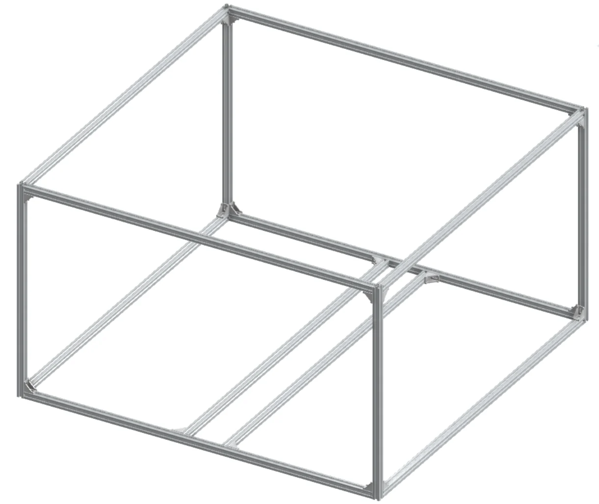
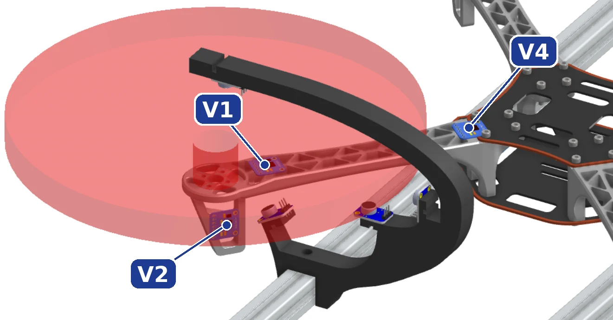

02 / Team senior design · 2026–2027
In progressUAV pre-flight health monitoring
Developing a controlled diagnostic workflow that listens to the vehicle before takeoff.
- Context
- Team senior design · 2026–2027
- My contribution
- Enclosure design and sensor-integration investigation; team project
- Toolkit
- Python · MAVLink · pymavlink · PX4 · CubePilot · ESP32 · CAD

The challenge
Checking health before flight.
A controlled pre-flight check can bring together acoustic, vibration, and telemetry data to help identify unusual behavior before a vehicle leaves the ground.
Our senior design team is developing a diagnostic workflow around repeatable test conditions, sensor acquisition, and healthy-data anomaly detection.
My contribution
Making the test environment tangible.
My documented work includes enclosure design and sensor-integration investigation. The broader telemetry, software, test planning, and hardware effort belongs to the senior design team.
Enclosure and mounting studies help connect the proposed sensing workflow to the physical constraints of the vehicle and test setup.


System plan
Repeatable inputs, useful diagnostics.
- 01
Control the test conditions
Develop fixtures, enclosure geometry, and a repeatable pre-flight diagnostic procedure.
- 02
Collect complementary signals
Bring together acoustic recordings, vibration sensing, and MAVLink vehicle telemetry.
- 03
Evaluate abnormal behavior
Build toward a healthy-data anomaly-detection workflow after synchronized acquisition and testing are established.
Current scope
An ongoing engineering effort.
This is ongoing senior design work for Fall 2026–Spring 2027. September 2026 progress material documents enclosure and sensor studies, test planning, and working telemetry collection.
Sensor synchronization, broader test execution, and model training remain development tasks in that documented phase. The current team's work is presented without claiming the results or awards of an earlier team.
Explore the team’s GitHub organization ↗ (opens in a new tab)